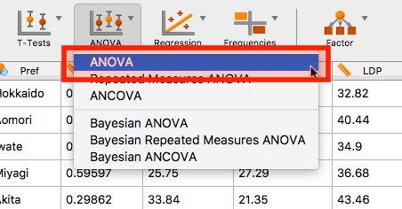
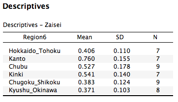

JASP入門: 一元配置分散分析 (ANOVA)
- 前回のt検定では二つのグループ間、あるいは二つの変数の平均値に差があるか否かを検定しました。今回は3つ以上のグループ間に平均値の差があるかを検定してみましょう。

- 分析メニューの「ANOVA」から「ANOVA」を選択します。
- まず、「どの変数の平均値の差をみるか」ですね。これを従属変数になります。今回は財政力指数の差を検証します。したがって、「
Zaisei」変数を選択し、「Dependent Variable」の「▶」をクリックします。 - つづいて、グループを指定します。グループは「Fixed Factor」で指定します。今回は6地域間における財政力指数の平均値の差を検証するので「
Region6」変数を選択し、「Fixed Factor」の「▶」をクリックします。
- ここまでだと、右の結果画面に分散分析の結果が表示されます。p値が有意水準 (一般的に0.05)より小さいので、「6地域間には財政力指数の平均値に差がある」と解釈します。
- しかし、これはどこかの組み合わせに差がある可能性を示しただけであり、必ずしも
- 「北海道・東北≠関東≠中部≠近畿≠中国・四国≠九州・沖縄」
- を意味するものではありません。具体的にどの組み合わせ (対)に財政力指数の差があるかを確認してみましょう（これを多重検定・多重比較といいます）。
- 左の分析画面にもどり、「Post Hoc Tests」をクリックします。
- まず、「
Region6」変数を選択し、「▶」をクリックします。 - つづいて、「Correction」ですが、今回はデフォルトの「Tukey」で結構です。多重比較は基本的に全ての2群の組み合わせでt検定を行うものですが、検定後はp値を補正します。この「Correction」はp値の補正方法です。したがって、他の補正方法を選択することによって結果が若干変わる可能性があります。興味のある人は色々とやってみましょう。
- せっかくなので、グループごとの財政力指数の記述統計も出してみましょう。「Additional Options」をクリックします。
- 「Display」の「Descriptive statistics」にチェックします。

- この表が多重比較の結果です。基本的な見方はt検定と同じです。
- たとえば、一行目は「北海道・東北」と「関東」間における財政力指数の平均値の差の検定結果です。「Mean Difference」が-0.355ということは、関東の方が北海道・東北より0.355高いことを意味しますね。p値 (\(p_{\text{tukey}}\)) は0.001未満なので、この二地域間には財政力指数に統計的有意な差があることを意味します。
- 三行目は「北海道・東北」と「近畿」間の差であり、統計的有意な差はありませんね。
{.table .pure-table .pure-table-horizontal .table-striped .table-responsive} ||北海道・東北|関東|中部|近畿|中国・四国|九州・沖縄| |—|—|—|—|—|—|—| |北海道・東北||||||| |関東|差O|||||| |中部|差X|差O|-|||| |近畿|差X|差X|差X|-||| |中国・四国|差X|差O|差X|差X|-|| |九州・沖縄|差X|差O|差X|差X|差X|-|
- 表でまとめると大雑把にはこんか感じですかね。多重比較の結果を効果的に示す方法にはいくつかあります。ネットなどで調べてみましょう。

- 最後に記述統計です。多重比較の「Mean Difference」を見れば、どっちの地域の財政力指数が高いかは分かりますが、レポートや論文には基本的に記述統計を示すことも大事なので確認しておきましょう。